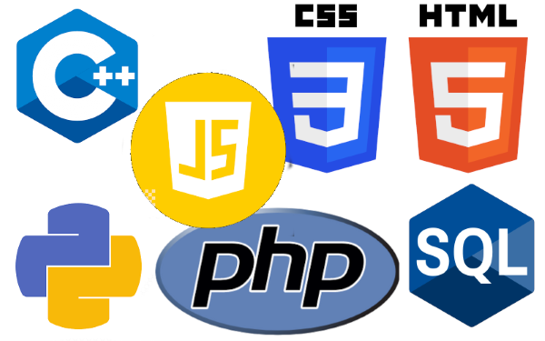
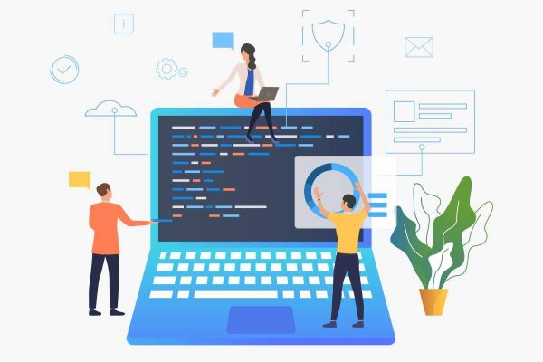

Technik Informatyk to ktoś, kto zajmuje się tworzeniem i obsługą systemów komputerowych, stron internetowych, baz danych i sieci. To jeden z najbardziej przyszłościowych zawodów. Informatyków ciągle brakuje, a zarobki są naprawdę dobre już na starcie.
Uczymy się projektować i zarządzać bazami danych za pomocą SQL. Pracujemy z systemem MySQL. Poznajemy, jak prawidłowo przechowywać dane, pisać zapytania i tworzyć widoki. To podstawa prawie każdej nowoczesnej aplikacji.

Tworzymy aplikacje internetowe od zera używając HTML, CSS i JavaScript. Każdy z nas robi własne projekty, które później może wrzucić do portfolio.

Uczymy się tworzyć nowoczesne, ładne i responsywne strony internetowe, które dobrze wyglądają zarówno na komputerze, jak i na telefonie. Pracujemy z narzędziami do projektowania interfejsów i dbamy o to, żeby strona była szybka i wygodna w użyciu. Ta strona, którą właśnie oglądasz, też powstała w całości przez ucznia naszej szkoły.
Poznajemy systemy Linux i Windows Server - od instalacji, przez konfigurację, aż po zarządzanie użytkownikami i bezpieczeństwem. Uczymy się stawiać serwery WWW, DNS i FTP. To wiedza, która jest bardzo potrzebna, jeśli chcesz pracować jako administrator sieci lub systemów IT.
Praca jako programista, tester oprogramowania, frontend/backend developer
Administrator sieci i systemów, specjalista ds. bezpieczeństwa IT, helpdesk
Tworzenie stron www, aplikacji mobilnych i sklepów internetowych dla klientów
Praca w urzędach, szkołach, szpitalach jako informatyk lub administrator
Specjaliści od systemów bankowych, cyberbezpieczeństwa i analizy danych
Łatwe kontynuowanie nauki na kierunkach Informatyka, Cyberbezpieczeństwo czy Data Science
Informatycy należą do najlepiej opłacanych specjalistów w Polsce. Już na starcie absolwenci mogą liczyć na wynagrodzenie wyraźnie powyżej średniej krajowej, a z doświadczeniem zarobki rosną bardzo szybko
Wielu programistów i administratorów pracuje zdalnie lub hybrydowo z domu czy dowolnego miejsca na świecie. Godziny pracy są często elastyczne
Branża IT rozwija się najszybciej ze wszystkich. Zawsze będziesz się uczył czegoś nowego
Na polskim rynku brakuje specjalistów IT. Po ukończeniu technikum masz bardzo duże szanse na szybkie znalezienie dobrze płatnej pracy